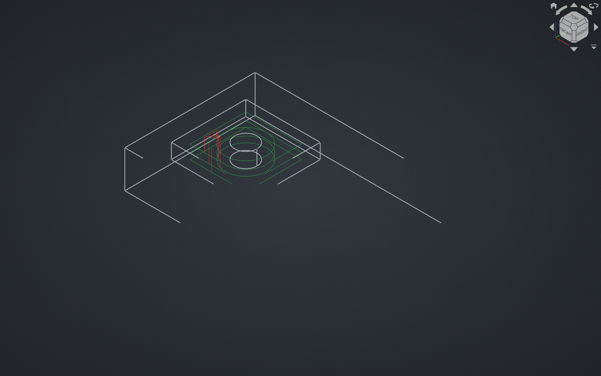
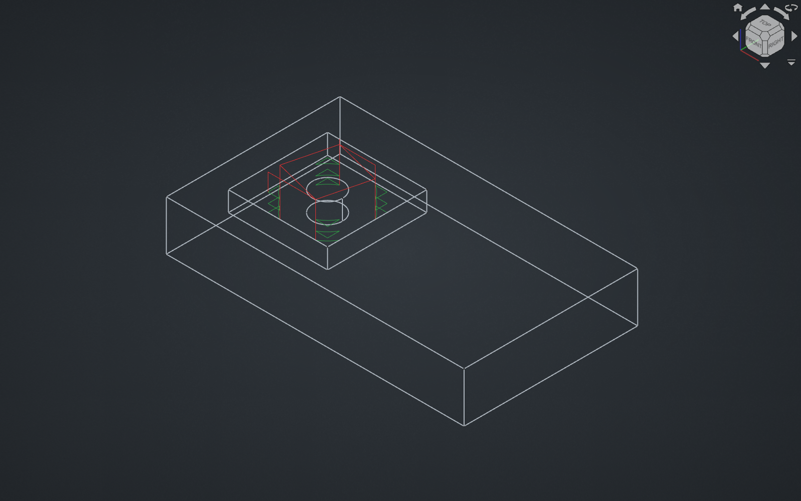
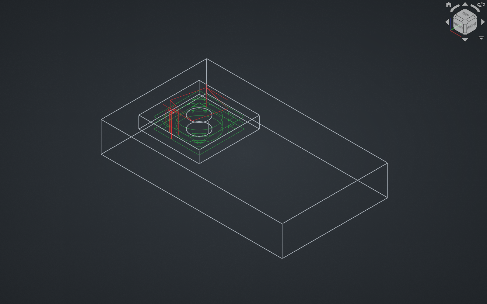

validate that before this pr when a rest machining op computes, the operations it takes into account get marked dirty, and that after this pr they do not
CAM unit tests with the PR applied: Ran 2137 tests · OK (skipped=11, expected failures=4)



validate that before this pr when a rest machining op computes, the operations it takes into account get marked dirty, and that after this pr they do not
After the PR (tested at runtime): they are not marked dirty. I tested this on a two-pocket job in the review tree's FreeCAD (PR build):
getClearedAreas() really does read RoughPocket's path through Path.getClearedArea().Up-to-date afterwards. So did the other ops. Nothing was left touched, and the Report view stayed free of errors.Before the PR: they are marked dirty. I confirmed this from the code, but couldn't reproduce it at runtime here. The chain on main:
Path/Op/Util.py:591 does path = op.Path. PyObjectBase::__getattro (src/Base/PyObjectBase.cpp:326-331, ATTR_TRACKING is defined) tags the returned Path.Toolpath object with its parent (the op) and the attribute name Path.Util.py:599 then calls path.getClearedArea(...). For a method that isn't marked @constmethod, the binding generator (src/Tools/bindings/templates/templateClassPyExport.py:692-694) emits startNotify() after the call. You can see it in this build's generated PathPy.cpp: setFromGCode still has it, and getClearedArea no longer does.PyObjectBase::startNotify() (PyObjectBase.cpp:505-535) calls __setattro(parent, "Path", this), which means op.Path = path. That sets the op's Path property and touches the op, mid-recompute of the rest op.PathUtil.applyPlacementToPath() first. That returns a fresh, untracked path, so on main those ops were not touched either.Why not reproduced: this is a C++ binding change, so the "before" side needs a FreeCAD binary built from main. cam_ab only swaps CAM Python. This job has only the PR build, and it may not rebuild or edit the review tree. The bridge's execute_python was declined (code approval), so I didn't run scripted probes such as calling a still non-const Path method on op.Path to show the same notify path. All runtime checks used the bridge's structured tools (cam_fixture, gui_run_command, edit_object, recompute_document, cam_path_stats) and the recorded demo.
@constmethod on getClearedArea in App/Path.pyi, and PathPy::getClearedArea(...) const in App/PathPyImp.cpp. The body only reads getToolpathPtr() (a const accessor) and passes it to Area::getClearedArea(const Toolpath*, ...), so the method really is const.staticCallback_getClearedArea no longer has the isConst() rejection or the startNotify() call. The truly mutating methods (addCommands, insertCommand, deleteCommand, setFromGCode) keep both. toGCode, copy and getCycleTime were already const.Path/Op/Util.py:getClearedAreas(), used by rest machining in Path/Op/Area.py:305 (Pocket and other Area ops) and Path/Op/Adaptive.py:518. Nothing relied on the old write-back.TestCAMApp) ran 2137 tests: OK (11 skipped, 4 expected failures). The PR adds no test. A test in TestPathOpUtil could recompute, call getClearedAreas() and assert that the earlier op isn't Touched./code-review medium 34410): no correctness findings. It raised two notes, which I dropped: the missing regression test (not a defect), and Command.transform also not being marked const (also on main, not part of this PR).None.
Path.getClearedArea() can now also be called on an immutable (const) Path.Toolpath object; before, it raised "This object is immutable". This is a side effect of @constmethod and harmless. (not tested)No properties, panels, defaults or file format changed.
demo.mp4: the PR build. Only RestPocket is changed, and RoughPocket stays Up-to-date in the tree.setup_both.png, rough_pocket.png, rest_pocket.png: the test setup and each pocket's path.The test document is saved as rest-test.FCStd in the job folder. It also contains a second, unused Job (Job001) left over from building the fixture.